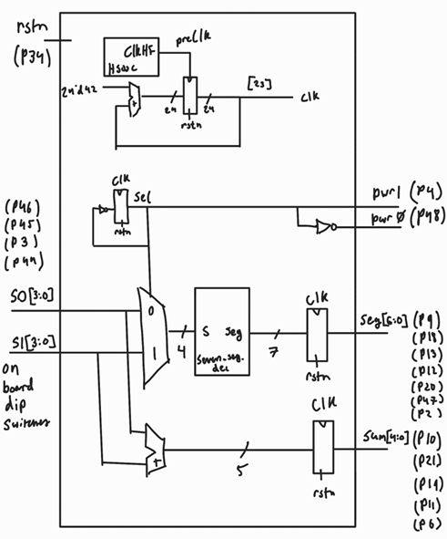
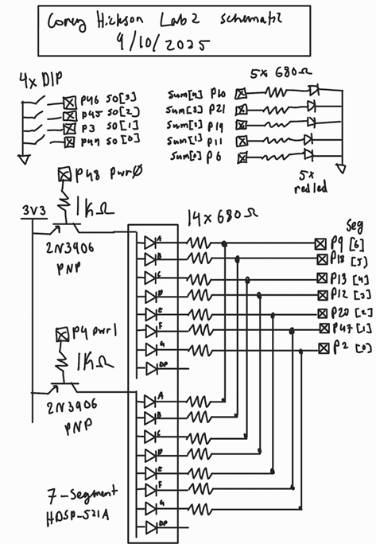
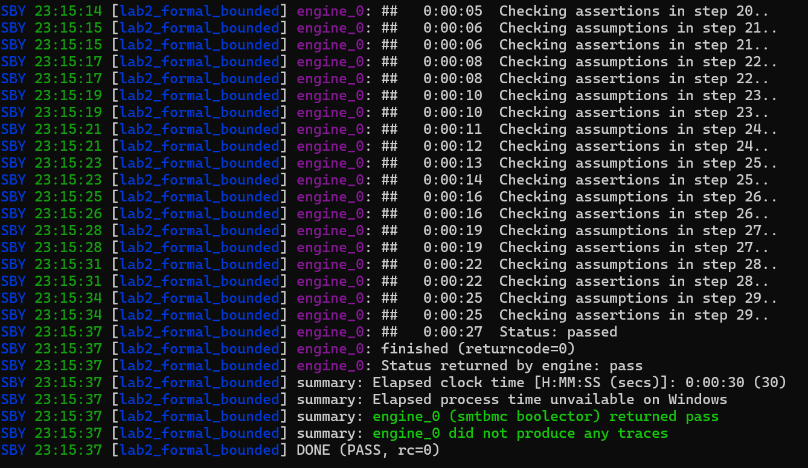
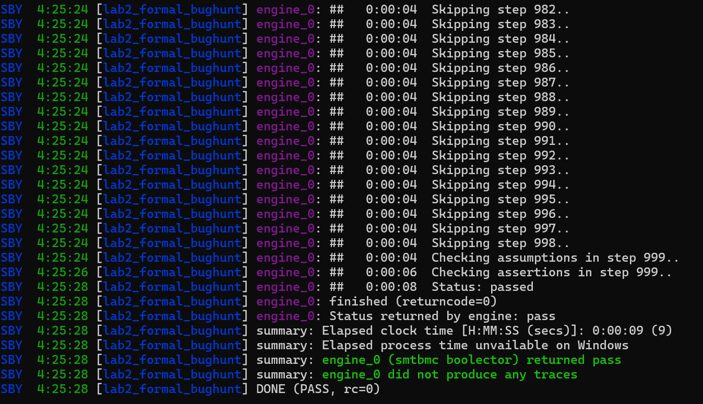
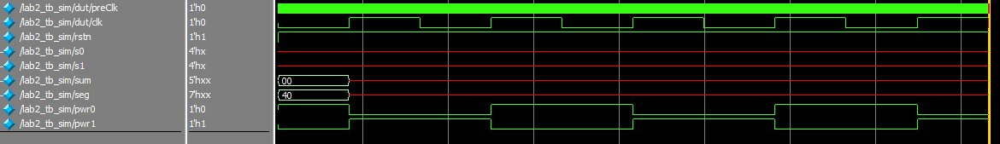
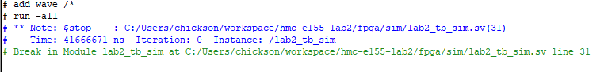
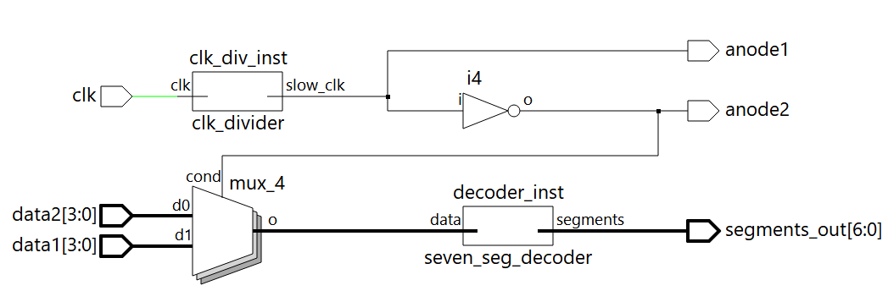
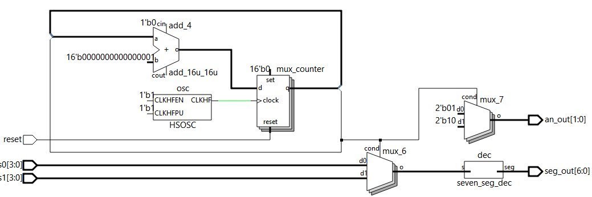

Lab 2: Multiplexed 7-Segment Display
Introduction
This report outlines the design and verification process for a time division multiplexed 7-segment display pair.
Design and Verification methodology
The design uses a single time-multiplexed 7 segment decoder that switches between two sets of hex nibble inputs at 60 Hz. This is done by dividing a 48 MHz clock to 120 Hz, and using this slow clock to drive a toggle flop to divide down to 60 Hz (called the select line). The select line switches between the two inputs and two power pins and the slow clock triggers flops on the output to ensure clean transitions between the two displays
I did formal verification for this project using SymbiYosys. For this, when synthesizing for formal verification there is an external clock input that takes the place of the slow clock. I proved that a set of design assertions cannot be broken for 30 cycles, and that there is no trace through the design that breaks an assertion on the 1000th cycle, so by interpolating we can declare the design bug free with respect to these assertions.
For the slow clock generation, I used the same formula as last week with a different target frequency:
\[ f = \frac{P \cdot F}{2^n} \]
Filling in n = 24 bits, F = 48 MHz, and f = 120 Hz, we can solve for P = 42 to achieve the desired frequency.
Since this was not covered in formal verification, this portion of the design was verified with a simple testbench simulation.
Technical Documentation
The SystemVerilog source code for this lab can by found on my github page
Block Diagram

The block diagram in Figure 1 demonstrates the design structure, with the single 7:4 decoder, high frequency clock, clock divider, and a few registers and gates
Schematic

The schematic in Figure 2 demonstrates the phsyical hardware layout of the design, with the two 7-segment displays, 5 additional LEDs, 4 external DIP switches, and 2 PNP transistors.
Component Values
For this lab we had 3 different resistor values to calculate.
First, we needed the current limiting resistors for the single LEDs driven by IO pins on the FPGA. From the FPGA datasheet, the FPGA can ouput 3.3V on an IO pin at a maximum of 8 mA of current. For safety, I aimed for ~3 mA. Red LEDs have a voltage drop of ~1.8V, so we get the following equation:
\[ R = \frac{3.3V - 1.8V}{3mA} = 500 \Omega \]
Next, we have the current limiting resistors for the 7-segment LED arrays. These follow the same general format as the previous calculation, but since there is a voltage drop of ~0.2V between the collector and emitter of the PNP transister, per the datasheet, the calculation becomes the following:
\[ R = \frac{3.3V - 0.2V - 1.8V}{3mA} = 433 \Omega \]
Finally, we have the resistor binding the base of the PNP transistor to the IO pin that powers each 7-segment display. Since the upper voltage is 3.3V going into a silicon diode that connects to the base, the voltage at the base is 0.7V lower or 2.6V. When the pin that is bridged to this terminal by a resistor is low, we wish to limit the current into the pin, so we aim for a large resistor. If we aim for around 3 mA of current, then we get the following equation for R:
\[ R = \frac{3.3V - 0.7V - 0}{3mA} = 866 \Omega \]
To be extra safe and make use of readily available components, I used 680 Ohms for the current limiting resistors and 1 kOhms for the resistors connected to the PNPs.
Results and Discussion
Formal verification results




Formal verification proved that the design met all cycle dependant specifications (based on assumptions about the clock signal), and the simple simulation demonstrated expected behavior of the clock.
Hardware testing
The input space was sampled at random to check a subset of the design functionality. Additionally, I observed that the two segments did no flicker or bleed into one another, and were reletively bright.
Conclusion
I was able to design a time division multiplexing circuit to have two design elements share a single piece of expensive harware. I brushed up on my synchronous design skills and my ability to formally describe the intended behavior of a sequential design without explicit test cases, as to be able to use formal verification.
I spent around 15 hours on this lab
AI Prototype
I gave google’s “AI Mode” search engine the following prompt:
“Write SystemVerilog HDL to time multiplex a single seven segment decoder (that decodes from four bits to a common anode seven segment display) to decode two sets of input bits and drive two sets of seven output bits.”
And it produced the commented out code in the AI section of the lab repository here. This design has the following structure:

This initially had a minor bug where the dimensions of a logic vector were given after the name. Once this was corrected, the design synthesized without issue.
Next, I gave a new AI session my files from lab 1 and the following prompt:
“Write SystemVerilog HDL to time multiplex a single seven segment decoder (that decodes from four bits to a common anode seven segment display) to decode two sets of input bits and drive two sets of seven output bits. Use the seven segment decoder and oscillator provided in the attached files.”
This time, there were no issues synthesizing and it produced the following design:

This is similar to my design for this lab, but without the registers on the output side.
This activity led me to question the necessity of the registers I added at the output, as the LLM did not feel the need to add them in its version of the design, which otherwiss lines up with mine. I am again impressed by the ability of LLMs to carry out digital design. I am beginning to wonder if they will come after my Design Verification career…